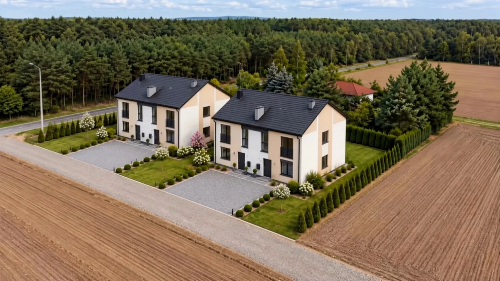
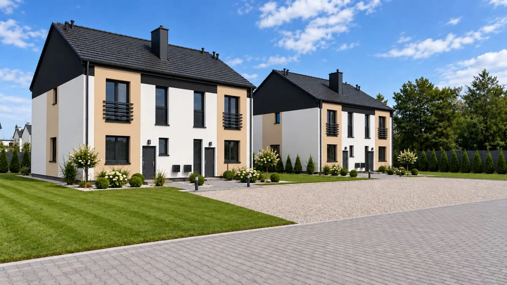
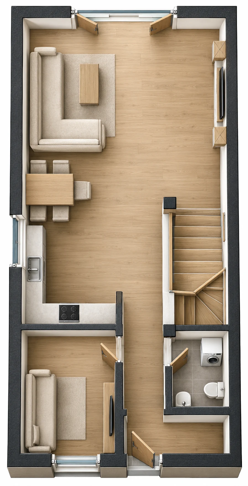
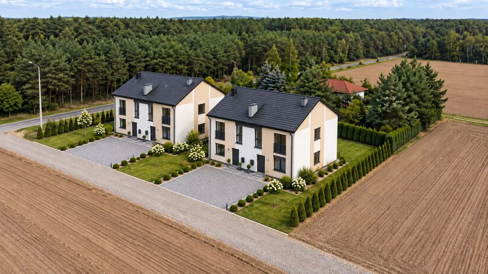
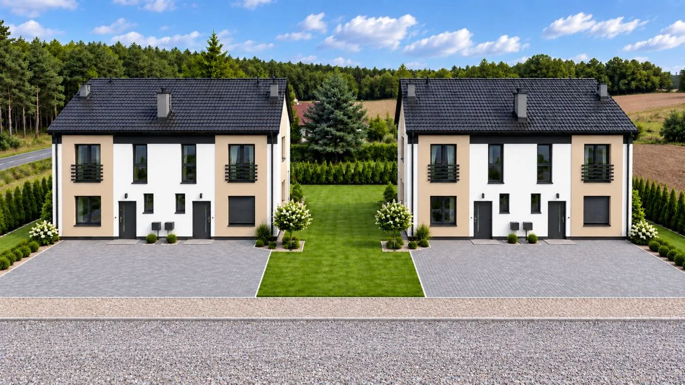
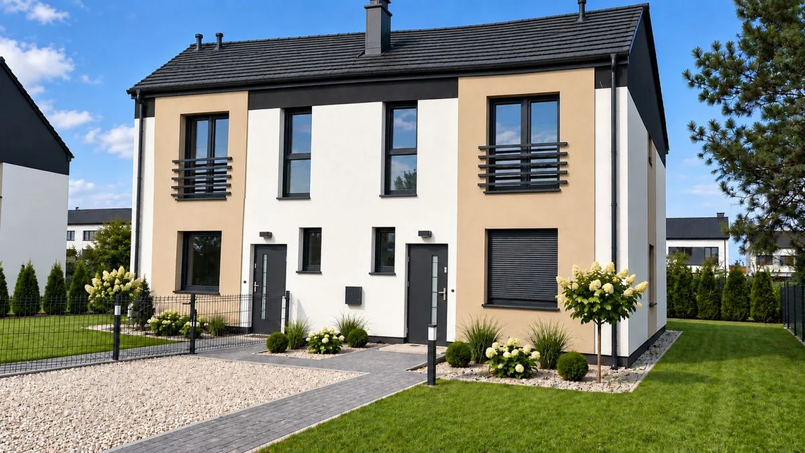
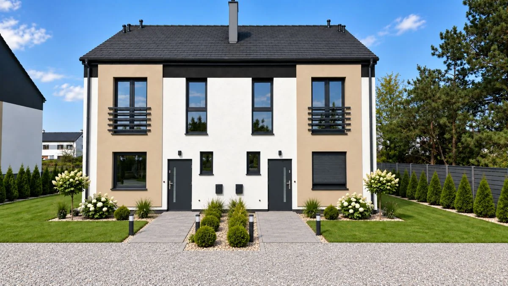
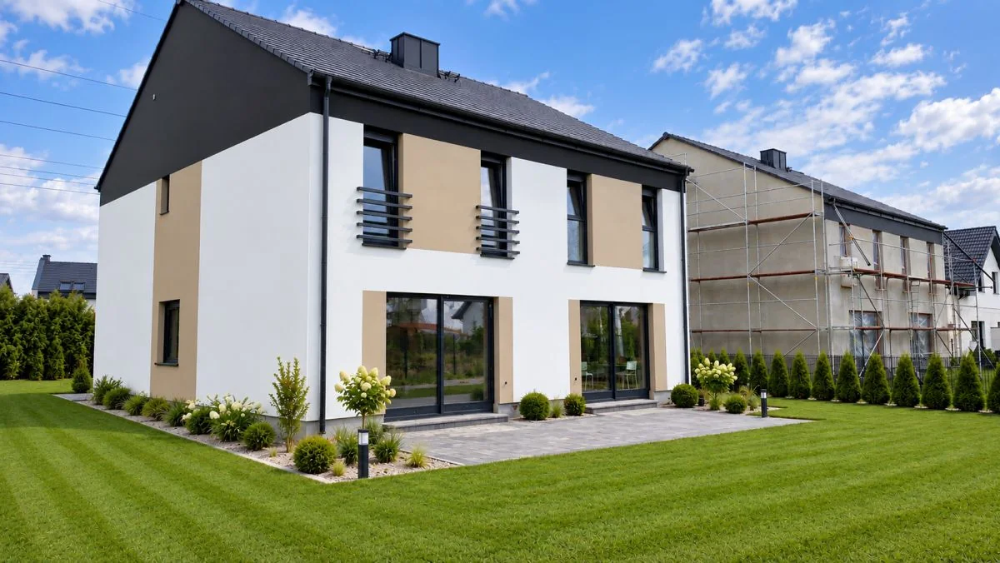
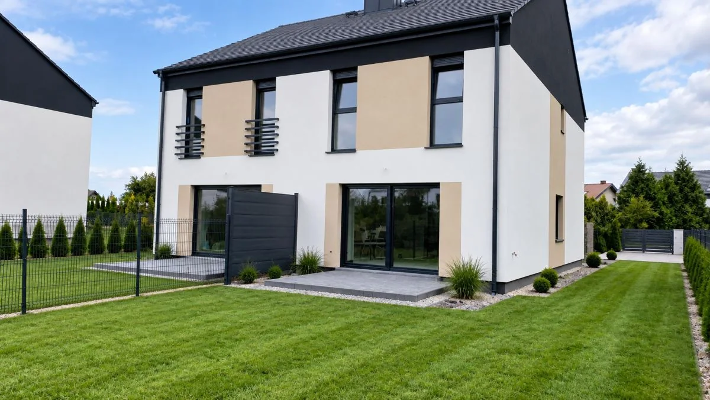
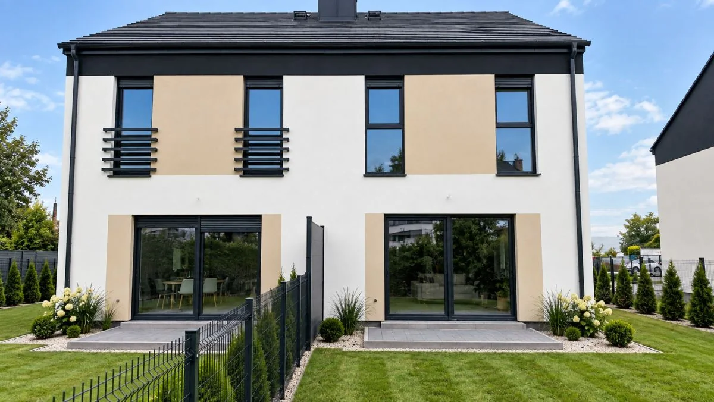

MARIO-BUD / SIERNIKI
Blisko natury.
Blisko siebie.
Własny ogród. Pięć pokoi. Miejsce na Twój rytm.
Poznaj dom ↓Przewiń, by odkryć więcej ↓01 / MIEJSCE DO ŻYCIA
Twój dom.
Więcej możliwości.
Dom w zabudowie dwulokalowej w Siernikach, w gminie Czempiń. Otwarty salon z aneksem kuchennym, dodatkowy pokój na parterze i trzy pokoje na górnej kondygnacji. Salon i taras skierowane na północny zachód.
INWESTYCJA W LICZBACH
Sierniki.
Wszystko w jednym miejscu.
- Powierzchnia według oferty*
- 107 m²
- Część działki
- ok. 317 m²
- Liczba pokoi
- 5
- Kondygnacje
- Parter + poddasze
- Planowane oddanie
- I kwartał 2027
- Standard
- Stan deweloperski
* Oferta podaje 107 m². Suma opisów pomieszczeń w przekazanym projekcie wynosi 110,35 m² bez schodów (4,45 m² osobno). Metraż do umowy i cena za m² wymagają potwierdzenia aktualną dokumentacją. Cena za m² powyżej została obliczona dla 107 m².
Historia cen
Aktualna cena ofertowa: 599 000 zł
Daty obowiązywania i wcześniejsze zmiany wymagają danych dewelopera. Nie uzupełniono historii domysłami.
02 / STANDARD WYKONANIA
Komfort od
dobrych podstaw.
Konstrukcja i izolacja
Według materiału ofertowego: ławy żelbetowe, ściany zewnętrzne Porotherm 24 cm, ocieplenie styropianem 20 cm oraz podwójna ściana między lokalami. Ostateczny standard potwierdza dokumentacja inwestycji.
Okna i wykończenie
Okna PCV trzyszybowe, rolety elektryczne, ocieplone drzwi wejściowe, betonowe schody, tynki gipsowe i posadzki betonowe.
Instalacje
Pompa ciepła 5 kW, ogrzewanie podłogowe w całym domu, woda z sieci, prąd i szambo. Przygotowane instalacje elektryczne oraz wodno-kanalizacyjne.
Ogród i otoczenie
Część działki ok. 317 m², ogrodzenie i dojście z kostki brukowej. Dokładny zakres zagospodarowania i korzystania z terenu potwierdź przed zakupem.

03 / UKŁAD DOMU
Każdy metr
ma znaczenie.

Parter
56,60 m² — suma opisów pomieszczeń
| Pomieszczenie | m² |
|---|---|
| Przedsionek | 2,90 |
| Komunikacja | 8,80 |
| Pokój gościnny | 8,20 |
| Aneks kuchenny | 8,10 |
| Pokój dzienny | 25,40 |
| Łazienka | 3,20 |
Widok 2D to wycinek oryginalnego projektu jednego lokalu. Wizualizacje 3D są koncepcyjną aranżacją na jego podstawie; oryginalny PDF pozostaje źródłem wymiarów i układu. Numery 1 i 2 w PDF są oznaczeniami projektowymi, nie nowymi nazwami lokali. Strych opisano w dokumentacji jako nieużytkową część wspólną — nie wliczono go do zestawienia.
ARCHITEKTURA / GALERIA
Z każdej
perspektywy.







Materiały oferty źródłowej mają charakter poglądowy. Aktualny stan inwestycji potwierdź u Mariusza Orwata.
POROZMAWIAJMY O TWOIM DOMU